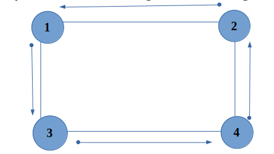

We have been given an undirected graph with n nodes and m edges. We are required to check whether the given graph contains cycle or not. If the graph is cyclic then print any one cycle in the graph.
A graph is called cyclic if there is a path in the graph which starts from a vertex and ends at the same vertex with non-repeating edges. That path is called a cycle. An acyclic graph is a graph which has no cycle.
Algorithm used:-
We can solve this problem using Depth First Search (DFS).
1. Detecting cycles using DFS :-
• We will be doing a series of DFS to solve this problem.
• Initially we mark all the nodes as unvisited i.e. vis[i]=0 for all (1<=i<=n)
• If a node (let’s say x) is unvisited then we will perform DFS over that particular node and mark that node as partially visited i.e. vis[x] = 1 while entering.
• While exiting from that node we will mark that node as completely visited i.e. vis[x] =2.
• Now if while DFS of any node we find a vertex which is partially visited, then this implies that we have found a cycle.
• In simple words, let’s suppose we start the DFS from 1 which is firstly marked as partially visited and node 2 is called recursively. In the same way node 2 is marked partially visited and node 3 is called recursively and the same goes for node 4 also. Now during the DFS of node 4 node 1 is called which is already marked as partially visited. So this implies that a cycle is found which is starting at node 1 and ending at node 4.
• Time complexity of this algorithm : O(N+M)
• where N -> No of nodes in the graph
• M -> No of edges in the graph
Implementation :-
Input :-
6 9
1 2
3 1
1 4
5 1
3 5
6 3
4 5
5 6
2 3
Output :-
Cycle found : 3 2 1
Input :-
5 4
4 1
3 5
2 1
3 2
Output :-
Acyclic Graph
Practice Problems :-
It is highly recommended to solve below problems, they are handpicked by Programmers Army:
2. https://practice.geeksforgeeks.org/problems/detect-cycle-in-an-undirected-graph/1
This article is contributed by Shaan Kumar
So that’s it for this article we will be coming up with our next article on further topics of Graph Theory very soon till then keep learning, keep coding, keep reading and keep improving !!
Happy Coding
By Programmers Army 😊